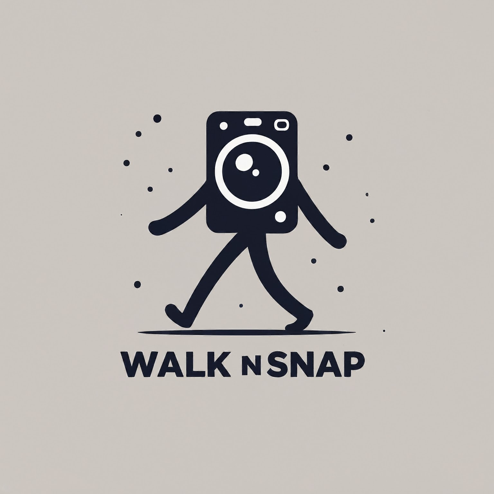

demo
+11 111111111
demo@gmail.com

Home
Blog
Enter Location Manually
Set Location
Go
 demo
demo +11 111111111
+11 111111111 demo@gmail.com demo +11 111111111 demo@gmail.com
demo@gmail.com demo +11 111111111 demo@gmail.com